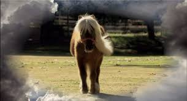

He was an animal, a legend, a friend. He was our beacon of light. He was Pawnee's horse. Sebastian may have been li'l, but his impact on this town, and the Parks Department, was anything but li'l. When his owners, Michael and Elizabeth Stone, first discovered him, Elizabeth says it was "like seeing an angel and being punched in the gut at the same time - because as perfect as he was, we knew we'd never see anything that perfect again."